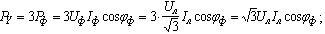
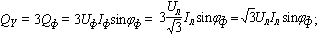

|
Активная мощность фазы при равномерной нагрузке: Pа = Pb = Pc = Pф =UфIфcosjф (соединение нагрузки звездой); Pab = Pbc = Pca = Pф = UфIфcosjф (соединение нагрузки треугольником). Aктивная мощность, потребляемая трёхфазным приёмником, соединённого звездой (PY) или треугольником (PD): 
Реактивные мощности фазы Qф и трёхфазного приёмника, соединённого звездой (QY) или треугольником (QD): Qф = UфIфsinjф; 
Полная мощность фазы Sф и трёхфазного приёмника, соединённого звездой (SY ) или треугольником (SD):
|
|||||||